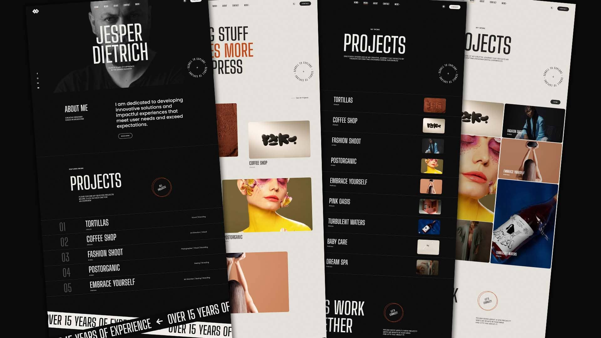

Jesper
Creative Portfolio HTML Website Template that comes with rich features and well-commented code.
Jesper
Creative Portfolio HTML Website Template that comes with rich features and well-commented code.
Stylish & Flexible
Explore Demos
Landing Page v.1
Home
Landing Page v.2
Home
Landing Page v.3
Home
Creative Grid
Portfolio
Classic Grid
Portfolio
Compact List
Portfolio
Masonry Grid
Portfolio
Preview List
Portfolio
Portfolio Sticky
Portfolio

Fullscreen Slider
Portfolio
Single Project v.1
Portfolio
Single Project v.2
Portfolio
Single Project v.3
Portfolio
Single Project v.4
Portfolio
Single Project v.5
Portfolio
Single Project v.6
Portfolio
Single Project v.7
Portfolio
Single Project v.8
Portfolio
Single Project v.9
Portfolio

Blog Sidebar
Blog
Blog Compact
Blog
Blog Archive
Blog
Blog Post Sidebar
Blog

Contact
Pages
Contact Simple
Pages
Dummy Page
Pages
Dummy Page v.2
Pages
Multimedia
Elements
Typography
Elements
Finest User Experience
Key Features
-
Flexible
Layouts -
Responsive
Design -
Well Commented
Code -
Dark & Ligt
Style -
GSAP
Animations -
Smooth Page
Transitions -
Smooth
Scrolling -
Mouse Tracking
Effect -
Magic
Cursor -
Working
Contact Form -
Parallax
Effects -
Reliable
Support
...and much more
What are you waiting for?
Create your
website
today!
Excited about building your new website? Purchase this template and get started today!